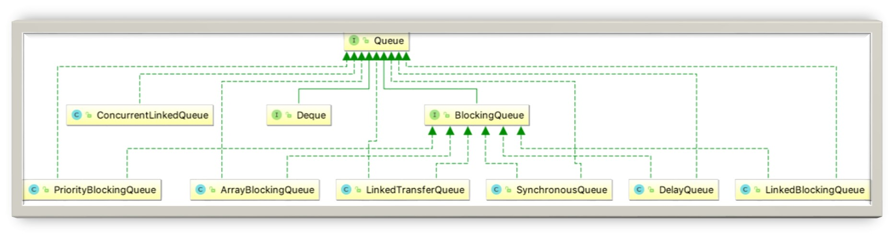

- 00 由点及面，搭建你的 Java 并发知识网.md.html
- 01 为何说只有 1 种实现线程的方法？.md.html
- 02 如何正确停止线程？为什么 volatile 标记位的停止方法是错误的？.md.html
- 03 线程是如何在 6 种状态之间转换的？.md.html
- 04 waitnotifynotifyAll 方法的使用注意事项？.md.html
- 05 有哪几种实现生产者消费者模式的方法？.md.html
- 06 一共有哪 3 类线程安全问题？.md.html
- 07 哪些场景需要额外注意线程安全问题？.md.html
- 08 为什么多线程会带来性能问题？.md.html
- 09 使用线程池比手动创建线程好在哪里？.md.html
- 10 线程池的各个参数的含义？.md.html
- 11 线程池有哪 4 种拒绝策略？.md.html
- 12 有哪 6 种常见的线程池？什么是 Java8 的 ForkJoinPool？.md.html
- 13 线程池常用的阻塞队列有哪些？.md.html
- 14 为什么不应该自动创建线程池？.md.html
- 15 合适的线程数量是多少？CPU 核心数和线程数的关系？.md.html
- 16 如何根据实际需要，定制自己的线程池？.md.html
- 17 如何正确关闭线程池？shutdown 和 shutdownNow 的区别？.md.html
- 18 线程池实现“线程复用”的原理？.md.html
- 19 你知道哪几种锁？分别有什么特点？.md.html
- 20 悲观锁和乐观锁的本质是什么？.md.html
- 21 如何看到 synchronized 背后的“monitor 锁”？.md.html
- 22 synchronized 和 Lock 孰优孰劣，如何选择？.md.html
- 23 Lock 有哪几个常用方法？分别有什么用？.md.html
- 24 讲一讲公平锁和非公平锁，为什么要“非公平”？.md.html
- 25 读写锁 ReadWriteLock 获取锁有哪些规则？.md.html
- 26 读锁应该插队吗？什么是读写锁的升降级？.md.html
- 27 什么是自旋锁？自旋的好处和后果是什么呢？.md.html
- 28 JVM 对锁进行了哪些优化？.md.html
- 29 HashMap 为什么是线程不安全的？.md.html
- 30 ConcurrentHashMap 在 Java7 和 8 有何不同？.md.html
- 31 为什么 Map 桶中超过 8 个才转为红黑树？.md.html
- 32 同样是线程安全，ConcurrentHashMap 和 Hashtable 的区别.md.html
- 33 CopyOnWriteArrayList 有什么特点？.md.html
- 34 什么是阻塞队列？.md.html
- 35 阻塞队列包含哪些常用的方法？add、offer、put 等方法的区别？.md.html
- 36 有哪几种常见的阻塞队列？.md.html
- 37 阻塞和非阻塞队列的并发安全原理是什么？.md.html
- 38 如何选择适合自己的阻塞队列？.md.html
- 39 原子类是如何利用 CAS 保证线程安全的？.md.html
- 40 AtomicInteger 在高并发下性能不好，如何解决？为什么？.md.html
- 41 原子类和 volatile 有什么异同？.md.html
- 42 AtomicInteger 和 synchronized 的异同点？.md.html
- 43 Java 8 中 Adder 和 Accumulator 有什么区别？.md.html
- 44 ThreadLocal 适合用在哪些实际生产的场景中？.md.html
- 45 ThreadLocal 是用来解决共享资源的多线程访问的问题吗？.md.html
- 46 多个 ThreadLocal 在 Thread 中的 threadlocals 里是怎么存储的？.md.html
- 47 内存泄漏——为何每次用完 ThreadLocal 都要调用 remove()？.md.html
- 48 Callable 和 Runnable 的不同？.md.html
- 49 Future 的主要功能是什么？.md.html
- 50 使用 Future 有哪些注意点？Future 产生新的线程了吗？.md.html
- 51 如何利用 CompletableFuture 实现“旅游平台”问题？.md.html
- 52 信号量能被 FixedThreadPool 替代吗？.md.html
- 53 CountDownLatch 是如何安排线程执行顺序的？.md.html
- 54 CyclicBarrier 和 CountdownLatch 有什么异同？.md.html
- 55 Condition、object.wait() 和 notify() 的关系？.md.html
- 56 讲一讲什么是 Java 内存模型？.md.html
- 57 什么是指令重排序？为什么要重排序？.md.html
- 58 Java 中的原子操作有哪些注意事项？.md.html
- 59 什么是“内存可见性”问题？.md.html
- 60 主内存和工作内存的关系？.md.html
- 61 什么是 happens-before 规则？.md.html
- 62 volatile 的作用是什么？与 synchronized 有什么异同？.md.html
- 63 单例模式的双重检查锁模式为什么必须加 volatile？.md.html
- 64 你知道什么是 CAS 吗？.md.html
- 65 CAS 和乐观锁的关系，什么时候会用到 CAS？.md.html
- 66 CAS 有什么缺点？.md.html
- 67 如何写一个必然死锁的例子？.md.html
- 68 发生死锁必须满足哪 4 个条件？.md.html
- 69 如何用命令行和代码定位死锁？.md.html
- 70 有哪些解决死锁问题的策略？.md.html
- 71 讲一讲经典的哲学家就餐问题.md.html
- 72 final 的三种用法是什么？.md.html
- 73 为什么加了 final 却依然无法拥有“不变性”？.md.html
- 74 为什么 String 被设计为是不可变的？.md.html
- 75 为什么需要 AQS？AQS 的作用和重要性是什么？.md.html
- 76 AQS 的内部原理是什么样的？.md.html
- 77 AQS 在 CountDownLatch 等类中的应用原理是什么？.md.html
- 78 一份独家的 Java 并发工具图谱.md.html
34 什么是阻塞队列？
在本课时中我们主要讲解一下什么是阻塞队列。
阻塞队列的作用
阻塞队列，也就是 BlockingQueue，它是一个接口，如代码所示：
public interface BlockingQueue<E> extends Queue<E>{...}
BlockingQueue 继承了 Queue 接口，是队列的一种。Queue 和 BlockingQueue 都是在 Java 5 中加入的。
BlockingQueue 是线程安全的，我们在很多场景下都可以利用线程安全的队列来优雅地解决我们业务自身的线程安全问题。比如说，使用生产者/消费者模式的时候，我们生产者只需要往队列里添加元素，而消费者只需要从队列里取出它们就可以了，如图所示：
在图中，左侧有三个生产者线程，它会把生产出来的结果放到中间的阻塞队列中，而右侧的三个消费者也会从阻塞队列中取出它所需要的内容并进行处理。因为阻塞队列是线程安全的，所以生产者和消费者都可以是多线程的，不会发生线程安全问题。
既然队列本身是线程安全的，队列可以安全地从一个线程向另外一个线程传递数据，所以我们的生产者/消费者直接使用线程安全的队列就可以，而不需要自己去考虑更多的线程安全问题。这也就意味着，考虑锁等线程安全问题的重任从“你”转移到了“队列”上，降低了我们开发的难度和工作量。
同时，队列它还能起到一个隔离的作用。比如说我们开发一个银行转账的程序，那么生产者线程不需要关心具体的转账逻辑，只需要把转账任务，如账户和金额等信息放到队列中就可以，而不需要去关心银行这个类如何实现具体的转账业务。而作为银行这个类来讲，它会去从队列里取出来将要执行的具体的任务，再去通过自己的各种方法来完成本次转账。
这样就实现了具体任务与执行任务类之间的解耦，任务被放在了阻塞队列中，而负责放任务的线程是无法直接访问到我们银行具体实现转账操作的对象的，实现了隔离，提高了安全性。
主要并发队列关系图

上图展示了 Queue 最主要的实现类，可以看出 Java 提供的线程安全的队列（也称为并发队列）分为阻塞队列和非阻塞队列两大类。
阻塞队列的典型例子就是 BlockingQueue 接口的实现类，BlockingQueue 下面有 6 种最主要的实现，分别是 ArrayBlockingQueue、LinkedBlockingQueue、SynchronousQueue、DelayQueue、PriorityBlockingQueue 和 LinkedTransferQueue，它们各自有不同的特点，对于这些常见的阻塞队列的特点，我们会在第 36 课时中展开说明。
非阻塞并发队列的典型例子是 ConcurrentLinkedQueue，这个类不会让线程阻塞，利用 CAS 保证了线程安全。
我们可以根据需要自由选取阻塞队列或者非阻塞队列来满足业务需求。
还有一个和 Queue 关系紧密的 Deque 接口，它继承了 Queue，如代码所示：
public interface Deque<E> extends Queue<E> {//...}
Deque 的意思是双端队列，音标是 [dek]，是 double-ended-queue 的缩写，它从头和尾都能添加和删除元素；而普通的 Queue 只能从一端进入，另一端出去。这是 Deque 和 Queue 的不同之处，Deque 其他方面的性质都和 Queue 类似。
阻塞队列的特点
阻塞队列区别于其他类型的队列的最主要的特点就是“阻塞”这两个字，所以下面重点介绍阻塞功能：阻塞功能使得生产者和消费者两端的能力得以平衡，当有任何一端速度过快时，阻塞队列便会把过快的速度给降下来。实现阻塞最重要的两个方法是 take 方法和 put 方法。
take 方法
take 方法的功能是获取并移除队列的头结点，通常在队列里有数据的时候是可以正常移除的。可是一旦执行 take 方法的时候，队列里无数据，则阻塞，直到队列里有数据。一旦队列里有数据了，就会立刻解除阻塞状态，并且取到数据。过程如图所示：
put 方法
put 方法插入元素时，如果队列没有满，那就和普通的插入一样是正常的插入，但是如果队列已满，那么就无法继续插入，则阻塞，直到队列里有了空闲空间。如果后续队列有了空闲空间，比如消费者消费了一个元素，那么此时队列就会解除阻塞状态，并把需要添加的数据添加到队列中。过程如图所示：

以上过程中的阻塞和解除阻塞，都是 BlockingQueue 完成的，不需要我们自己处理。
是否有界（容量有多大）
此外，阻塞队列还有一个非常重要的属性，那就是容量的大小，分为有界和无界两种。
无界队列意味着里面可以容纳非常多的元素，例如 LinkedBlockingQueue 的上限是 Integer.MAX_VALUE，约为 2 的 31 次方，是非常大的一个数，可以近似认为是无限容量，因为我们几乎无法把这个容量装满。
但是有的阻塞队列是有界的，例如 ArrayBlockingQueue 如果容量满了，也不会扩容，所以一旦满了就无法再往里放数据了。
以上就是本课时的全部内容，本课时讲解了什么是阻塞队列，首先我们讲解了阻塞队列的作用；然后看了 Java 8 中的并发队列，分为阻塞队列和非阻塞队列，并且在阻塞队列中有 6 种常见的实现；最后我们看了阻塞队列的特点，包括 take 方法、put 方法和是否有界。